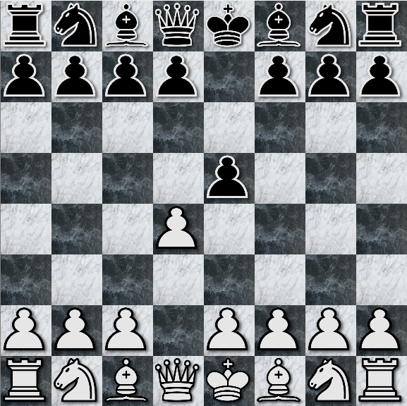
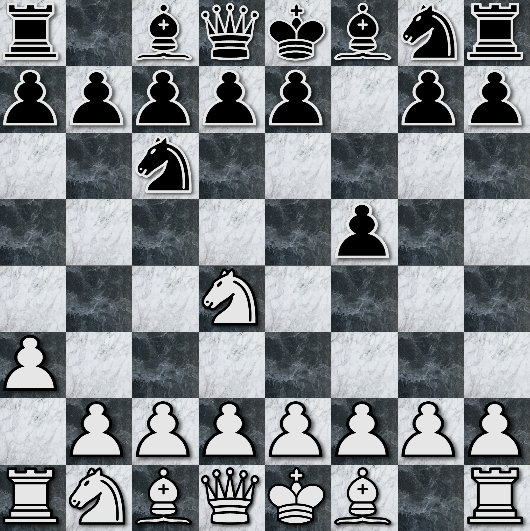

Chess is a two-player board game played with 32 pieces on a 64-square, 8 by 8 grid. 16 pieces are initially owned by each player, all of the same color, white or black. The initial position of the pieces is as given in the following figure, which also labels the names of the different types of pieces on the board.
As you can see, each player gets 8 pawns, 2 knights, 2 bishops, 2 rooks, 1 queen, and 1 king. The goal of the game is to check-mate your opponent's king. Exactly how this may be accomplished will become clear soon.
The game proceeds in alternating turns, white always going first. On your turn, you move one of your pieces from its currently occupied square, to some other square, which may or may not be occupied. If it is occupied by an opponent's piece, this is called a capture. The opponent's piece is taken off the board to make room for your piece. You may not capture your own pieces, and neither player's king can be captured. This will become clearer later on.
You can't just move any piece from where it is to any other square. Each piece has its own rules for how it can move on the board. Rows of squares on the Chess board are called ranks, and columns of squares are called files.
When pawns move without capture, they can only advance in rank, and may not change file. They are allowed to move up only one rank toward their opponent's side of the board, unless they have not yet moved from their initial position, in which case, they are allowed to move up one or two ranks, if desired.
A pawn can capture an opponent's piece by moving to an immediately diagonal square in the direction of the opponent's side of the board. For example, in the figure below, with white to play, the pawn in the queen's file can move to capture the pawn in the king's file.
If a pawn is able to reach the final rank on their opponent's side of the board, it may be promoted to a knight, bishop, rook or queen. This means replacing the pawn with whichever of these pieces the pawn's player chooses.
There is one last rule to know concerning pawns called en passant, French for "in passing." Consider the following situation.
Here, it is black's turn to play, and white has just moved one of its pawns two squares up to the same rank as the black pawn in right-most file. It is on this turn, and this turn only, that black, if they so choose, has the option of capturing this white pawn. Doing so, the board becomes as follows.
En passant does not apply when pawns reach the same rank side-by-side in the case that a pawn moved only one square toward the opponent's side of the board. It must be a double-hop, which can only be performed from the initial rank.
Knights are the only type of pieces on the board that cannot be obstructed in their movement by other Chess pieces. They are allowed to move in "L"-shapes about the board. That is, they can move one rank up or down and two ranks left or right (in a single turn), or two ranks up or down, and one rank left or right. For example, being white's turn to play, the knight in the king's file below can move to capture the black knight on the king's side of the board, but not the black knight on the queen's side of the board.
Bishops move diagonally any number of squares, so long as they do not pass through any other piece on the board.
Here, being white's turn to move, the white bishop can, if they choose, capture the black bishop. Notice that a bishop starting on a light colored square, will never be able to reach a dark colored square, and vice-versa.
A rook is like a bishop, except that it moves laterally and longitudinally, not diagonally. That is, on a single turn, it can move as many squares as it pleases left or right, or on a single turn, up or down, but not diagonally, so long as it does not pass through any other piece on the board.
Here, in the figure above, neither rook is in a position to capture the other, but either could capture an opponent's pawn. Note also that unlike bishops, rooks can possibly land on any square, light or dark colored.
The queen is the most powerful piece on the board. The queen can move laterally, longitudinally, and diagonally, as many spaces as it pleases, provided it does not jump over any other piece.
Here, each queen is in a position to capture the other, or one of its opponent's pawns, but is blocked from moving backward or toward the queen's initial side of the board by immediately adjacent pawns.
The king is just like the queen, except that it cannot move further than an immediately adjacent or kitty-corner square, except in the case of castling. (More on that later.) Consider the situation below.
Here, it is white's turn to move, and if desired, the white king could capture the closest black pawn, but not any other black pawn. Alternatively, it could move one square back. It could not, however, move one square up, because then the black king could capture it, and capturing the king is not allowed in Chess.
Consider another example as follows.
Here, the white king cannot capture the black pawn, because it puts the white king in a position where it can be captured by the black king. In general, a king cannot move anywhere on the board where it can be captured by an any opponent's piece. More generally, no piece on the board can be moved for a player if it puts that player's king in a position to be captured.
As mentioned, there is one case where a king can move further than one square, and it's called a castle, or castling move, and it's quite special, because you get to move a rook at the same time. There are three catches, however. First, a castling move cannot be performed between a king and one of its rooks if either have already moved one or more times during the course of the game. Second, you cannot use the castling move to avoid check (more on that in a bit.) And lastly, the king and rook in question can jump over each other, but neither can jump over any other pieces.
In the following figure, it is black's turn to move, and they are neither in a position to queen-side castle, or king-side castle. In the former case, a knight is in the way. In the latter, a bishop and knight prevent the castling move.

When it becomes white's turn to move, however, they can, if they so choose, perform a queen-side castle. Doing so, the board would become as follows.
Here you can see that the king moved two squares to the left, and then the rook was placed to the right of it, all in a single turn! In a king-side castle, it's just the opposite. The king would move two squares right, and then the rook would be placed left of it.
As mentioned, you can't put your king in harm's way. However, you can put your opponent's king in harm's way. When your king is being threatened (i.e., an opponent's piece is in a position to capture your king), we call it "check", and it is customary to say "check" when you place your opponent in this situation. Furthermore, it is a forcing move. That is, if your king is in check, then you must make a move that gets your king out of check. This may be done by moving your king, placing a piece between your king and an opponent's threatening piece, or capturing that piece. However, if no such move exists, then it's not just check; it's "check & mate", which you are encouraged to say with glee if you can manage to put your opponent in this situation.
With white's turn to play, following is an example of check-mate.

Here, white has no way of getting its king out of check, so black wins the game.
Stale mate is a situation where a player is not in check, but has no legal moves. For example, consider the following situation where it is white's turn to move.
Here you can see that the white king can't make a move without putting itself in check, so the game ends in a draw.
Similarly, if only two kings remain, you must end in a draw, because there is no longer a way for either player to achieve check-mate.
Play Chess long enough, and you'll run into a few terms. Let's go over a few of them.
A fork is where a piece is able to threaten two or more pieces simultaneously, as illustrated below.
Here, the white knight near the center of the board is threatening a black knight and a black pawn. This particular fork isn't very good if it's black's turn to play, because black can simply capture the white knight. However, let's look at another fork.
Here again, the white knight is threatening two black pieces, but being black's turn, they cannot save both their pawns from imminent capture. Black would have to hope there was some way to capture the white knight, or threaten white in some other way, to avoid at least one pawn from being captured.
Consider the following situation where it is white's turn to play.
Here, the white bishop is considered pinned, because moving it would mean putting a higher-valued piece (namely, the white queen) in jeopardy. A pin is particularly effective when a piece can't move because doing so would cause a player to put themselves in check which is, as has already been mentioned, illegal. An example of this follows.
Here, a white pawn blocks a black bishop from checking the white king. Being white's turn to play, they cannot move this white pawn, because it's pinned by the black bishop.
A hanging piece is one being threatened, but not protected. Consider the following example.
Here, being black's turn to play, the white pawn in the center of the board is under threat, but there is no immediate consequence for black in capturing it. Specifically, the black pawn moving to make the capture is not immediately under thread once the capture of the white pawn has occurred.
On the other hand, suppose it was actually white's turn to play. They could capture the black pawn, but then the black queen could move to capture the white pawn. In other words, the black pawn near the center of the board in this case, is not hanging.
Sometimes you can save a hanging piece by putting your opponent in check, or by just threatening a piece of greater value.
Adding to the subtlety of the game of Chess, perhaps capturing a hanging piece plays into the plans of the player whose piece it is that's being captured. Perhaps the new board position, though currently showing a deficit for a player, will, in time, become more advantageous later in the game. For example, a capture can lead to the capturing piece being placed in a situation where it becomes useless, because any subsequent move puts it in immediate danger.
In any case, a gambit is where you tempt your opponent into making a move or capture that may seem to be, or actually is, immediately advantageous for them, but will, in the long run, likely be more advantageous for you, the person offering the gambit.
Admittedly, this subject goes far beyond my limited knowledge of Chess, but certain kinds of gambits are so common, they've been given names, such as the Queen's Gambit, and are worth studying, and are generally beyond the scope of this simple tutorial. Nevertheless, the setup for the Queen's gambit is as follows.
Here, white has just finished placing a pawn in harm's way, and it's black's turn. If black were to accept the gambit, they would take the white pawn. Doing so, white is down a pawn, but is able to place two pawns in the center of the board, as follows.
Why is this better for white? Because in Chess theory, it's very important to control the center of the board. Admittedly, I don't know much beyond that, but it is a tried-and-true principle nevertheless.
What I do know, generally speaking, is that at the beginner levels of Chess, games are won most often by employing good tacticts. For example, avoid two consecutive moves that could have just been done in one move, and avoid moving a piece into a position, either where it isn't already backed-up by an existing piece, or can get backed up before it's threatened.
For me, the main difficulty with Chess is "seeing all ends" down to a certain depth. If you have a great memory, and can play the game forward in your head before making a move, then you may have a strong knack for Chess. Just as important is having a plan or stratagy, while also trying to deduce the plan or stratagy that your opponent may be taking against you. Lastly, some say that a great deal of good Chess playing can simply come from pattern recognition, which only comes with time and experience, and again, a good memory. I suspect, however, that the true masters of Chess can just calculate their way to victory in any case.
This is simply a move you make, after which, you almost always immediately realize was a mistake, big or small. In other words, it describes almost every move I make in Chess.
To this point, we have covered more than enough material to get someone started playing the game of Chess. There is so much more to learn and fun to be had. Go forth and play the game!